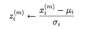

Group members:
Adam Even Engel
Chris Hall
Tim Duffy
To develop a Neural Net able to analyze large swaths of training data from the University of California Irvine's data banks using a backpropagation algorithm, and to use the Neural Net to predict results for the testing data with minimal error.
We utilized the Java programming language for this project using both the Eclipse and NetBeans IDEs. The final source code was a modification of the supplied code written by Zhiqiang (Alex) Ren. As previously stated, this project implemented a classic back propagation algorithm.
To solve this problem, we identified three key issues to resolve:
Error calculation
Neural net weighting
Preprocessing of data
Development was performed over the course of four days. We began by implementing a function train(), the purpose of which was to create the optimally-weighted neural net for the training data. This alone took a solid three days of coding and debugging. This was coupled with development of error calculation techniques which treated the node thresholds of the neural net as sigmoidal functions. Calculation of the hidden node error was performed according to the following equation:
BetaA = For all output connections(A to i), ∑ (weight * outputi * (1 - outi) * betai )
where A is a hidden node whose output connects to node i and beta is the calculated error.
We used this error to calculate the necessary weight changes. With every pass through the data, the weight was automatically adjusted according to the error previously calculated. In this way, we hoped to minimize our error over the course of several hundred passes through the training data sets.
To choose our parameters, we began with a learning rate of 1. From there we compared the error rate when we increase the learning rate significantly, and when we decreased it significantly. This allowed us to find an optimal learning rate using a guess-and-check method for each data set. We found that for the first data set, a learning rate of 14 worked extremely well. For the other data sets, a learning rate of 1 worked fine. We also found that increasing the number of training rounds significantly decreased our error rate.
For the credit data set, initially the data had to be converted from strings to numbers (in the form of doubles) which was performed using a function provided within the skeleton code. Once our data set was ready for use, we had to account for several missing data values, indicated in the original files with a question mark “?”. We replaced these “?”'s with the label-conditioned mean found for that particular attribute. Once all of this preparation was complete, we implemented a normalization function below to scale the data.

The
normalized data could then be run through our back propagation
algorithm to create a minimal-error neural net.
We had to treat the lens data a little differently to allow for three possible outputs instead of 2. Since output nodes all had to have values between 0 and 1, the thresholds for the three outputs were set as 0, 0.5, and 1 to replace the 1, 2, and 3 found in the data, respectively. A new errorrate() function also had to be developed to compensate for a new range of outputs. To do this, the output range was separated into thirds and compared to the target output.
After implementing these functions and algorithms, testing began. They weren't pretty to begin with. We ran into enough bugs that two evenings worth of coding were dedicated to determining where our code went wrong. When we began testing, our calculated error was outrageously high. We realized that this was due to a faulty understanding of the calculation of delta. Near the end of our coding, we realized that the lenses error calculation for the testing data consistently returned an error of 0.5 which, let's be honest, is ridonkulous. Since our data wasn't normalized before analysis, it returned this unreasonably high error. Once we normalized the numbers and figures, the error rate dropped to zero, and voila, we had our Neural Net. Long story short, zombies would eat this up.
Because the weights were randomized at initialization, no two trials produced the same results. As such, in lieu of supplying data, we urge you to test out our code for yourself and watch the error shrink.
Neural nets are a good way to analyze large sets of data to predict future outcomes. However, they are not 100% accurate and small bugs in development lead to disastrous results. When all is said, and done...
To download the code for yourself, click here.